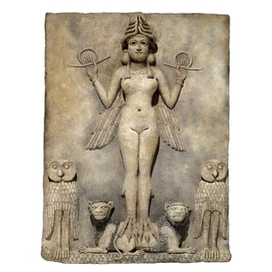
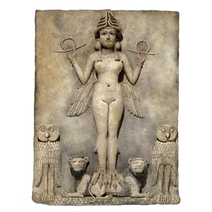
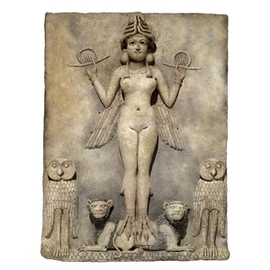
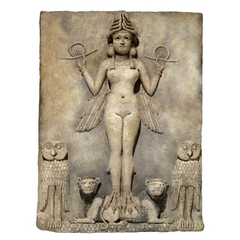

.jpg)
 



A Vênus de Willendorf é uma das mais icônicas representações da arte pré-histórica, datando de aproximadamente 25.000 a 30.000 anos atrás. Essa pequena estatueta de pedra calcária simboliza a fertilidade, a maternidade e a abundância, refletindo as crenças e valores das sociedades paleolíticas.
.jpeg)
A Vênus de Willendorf foi descoberta em 1908, possui 11,1 cm de altura representando estilisticamente uma mulher, descoberta no sítio arqueológico do paleolítico situado perto de Willendorf, na Áustria. Desde então, tornou-se um dos símbolos mais reconhecidos da arte pré-histórica.
Significado:
Com suas formas corporais exageradas — seios, ventre e quadris proeminentes — a Vênus de Willendorf é amplamente interpretada como um símbolo de fertilidade e maternidade. A ausência de detalhes faciais sugere que a ênfase estava no corpo como fonte de vida e não na individualidade.
Essas estatuetas eram provavelmente usadas em rituais de fertilidade ou como amuletos para garantir a prosperidade.
Existem muitas outras estatuetas semelhantes à Vênus de Willendorf, encontradas em várias partes da Europa. Embora cada uma tenha suas peculiaridades, todas compartilham a ênfase na forma feminina, reforçando a ideia de que a fertilidade era um aspecto central das crenças pré-históricas.
A Vênus de Lespugue é uma estatueta do Paleolítico Superior, datada de cerca de 25.000 anos, descoberta na França. Feita de marfim de mamute, ela retrata uma figura feminina com características exageradas, simbolizando fertilidade
A Vênus de Hohle Fels é uma estatueta pré-histórica datada de cerca de 35.000 anos, descoberta na Alemanha. Esculpida em marfim de mamute, representa uma figura feminina com características acentuadas, simbolizando fertilidade.
A Vênus de Dolní Věstonice é uma estatueta do Paleolítico Superior, datada de cerca de 29.000 a 24.000 anos atrás, descoberta na República Tcheca. Feita de cerâmica, com cerca de 11 cm de altura, é uma das mais antigas figuras femininas conhecidas e destaca-se por sua representação detalhada e estilizada da fertilidade.
A Vênus de Willendorf e outras estatuetas foram criadas durante o período Paleolítico Superior, quando as sociedades eram formadas por caçadores-coletores. A representação da fertilidade e da maternidade reflete a importância dessas figuras no cotidiano e nos rituais espirituais dessas comunidades.
%20(1)%20(1).jpg)